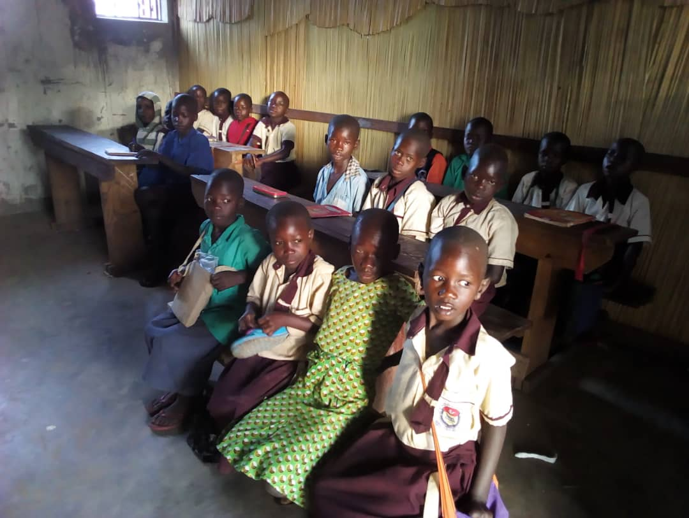
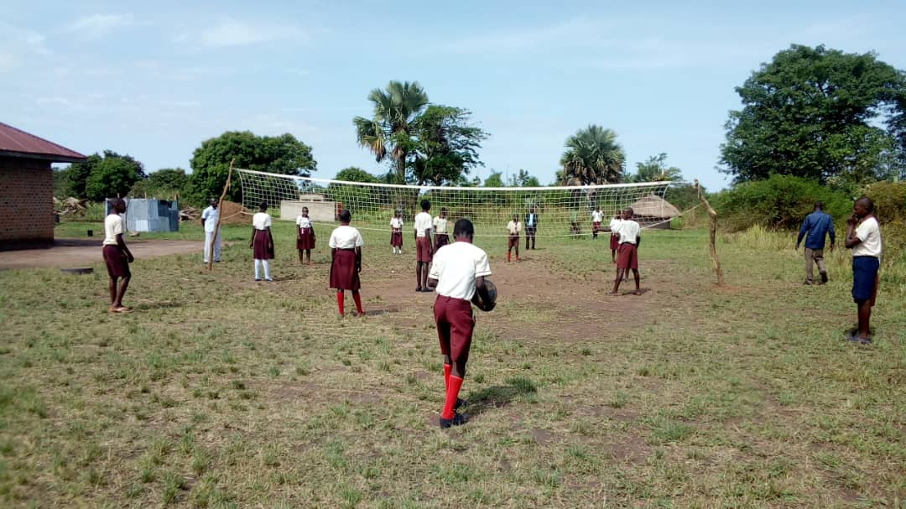
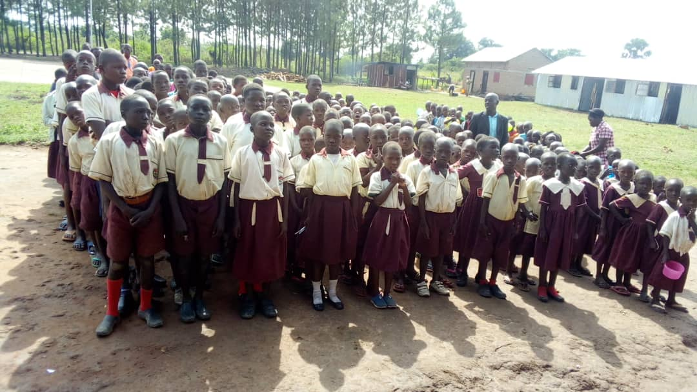

The School is Open for the Current Term
We welcome both boarding and day scholars.
About Us
Christ the King Nursery and Primary School was established in 2018 to increase access to quality education for children from economically disadvantaged families. The school is located 46 km from Lira City in Northern Uganda.
The school currently serves nursery and primary pupils from more than 15 surrounding villages. Our dedicated teaching staff ensures a supportive learning environment for all learners.
Gallery




Location
School Video
Our Programs
Nursery
Early childhood education foundation for children under six years.
Primary
Comprehensive primary education preparing pupils for PLE examinations.